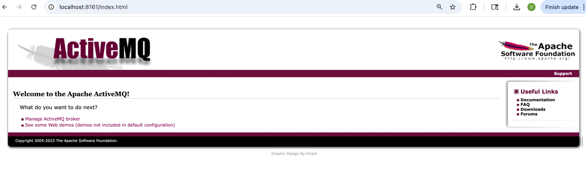
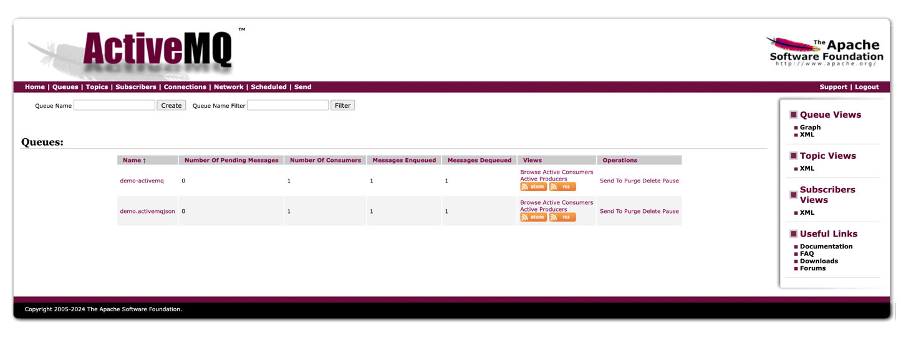
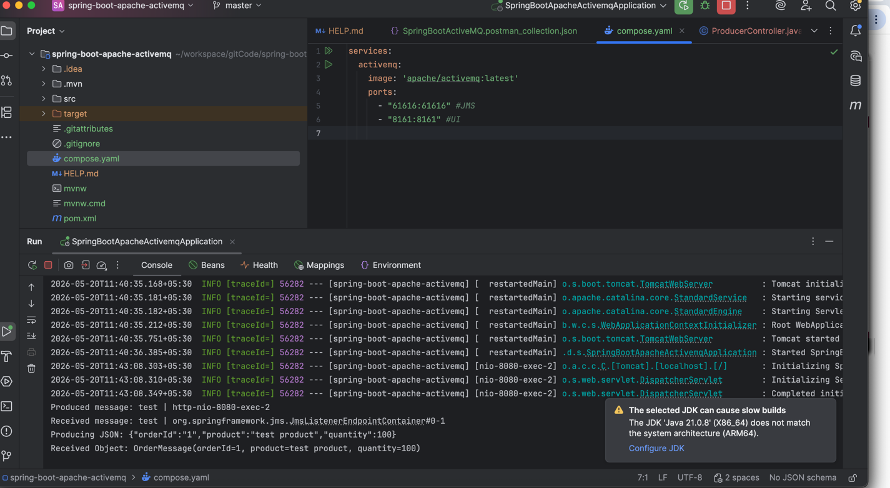
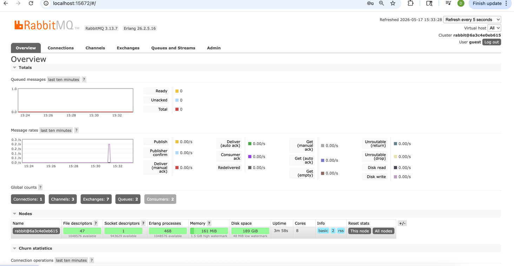
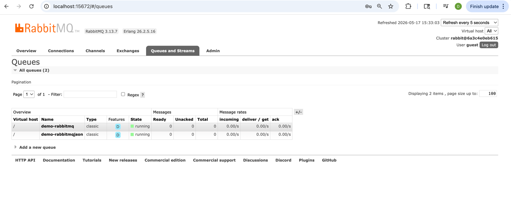
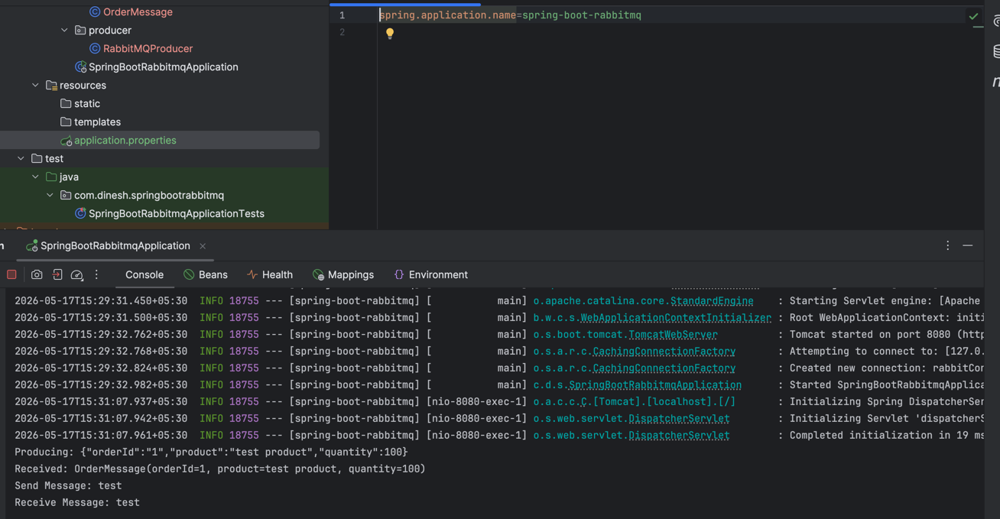

Overview
The screenshots below illustrate different parts of the applications. Replace the placeholder images with actual screenshots from your repository.
Screenshots from the Spring Boot Queue projects including ActiveMQ, RabbitMQ, Docker, Postman and application execution.
The screenshots below illustrate different parts of the applications. Replace the placeholder images with actual screenshots from your repository.

Apache ActiveMQ administration console.

Sending a message using the Producer REST API.

Console output after receiving a message.

RabbitMQ Management UI.

Queue details and message statistics.

Sending JSON message through RabbitMQ.
Testing REST APIs using Postman.
docs/
└── screenshots/
├── activemq/
│ ├── dashboard.png
│ ├── postman-producer.png
│ └── consumer-log.png
├── rabbitmq/
│ ├── dashboard.png
│ ├── queue.png
│ ├── postman-producer.png
│ └── consumer-log.png
├── docker/
│ └── docker-ps.png
├── application/
│ └── console.png
├── architecture/
│ └── message-flow.png
├── postman/
│ └── api-testing.png
└── project/
└── project-structure.png